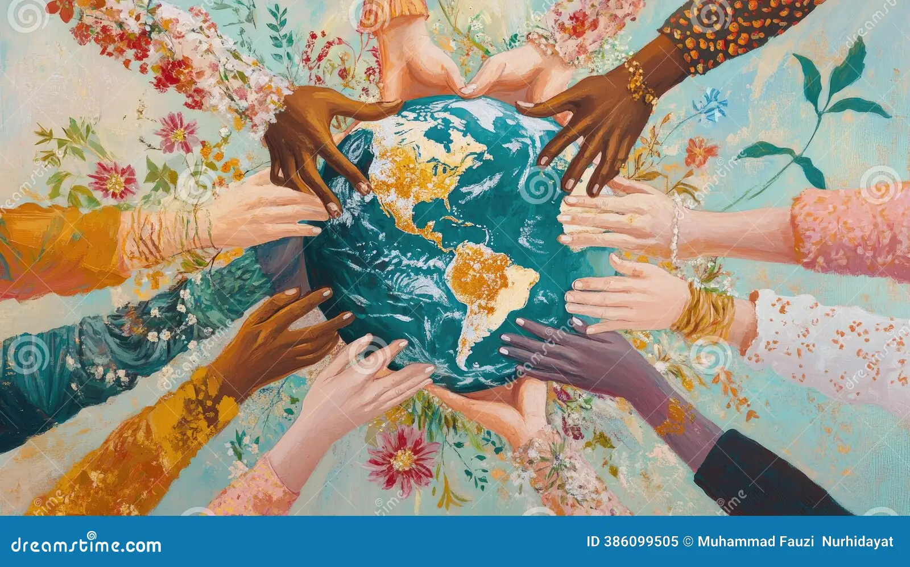

Nuestra Esencia
Vivimos un momento clave en la historia de la humanidad. Los grandes retos globales requieren conciencia, cooperación y unidad, más allá de fronteras, culturas o creencias.
The World United surge como una respuesta colectiva: un espacio donde la diversidad se honra y la unidad se vive.